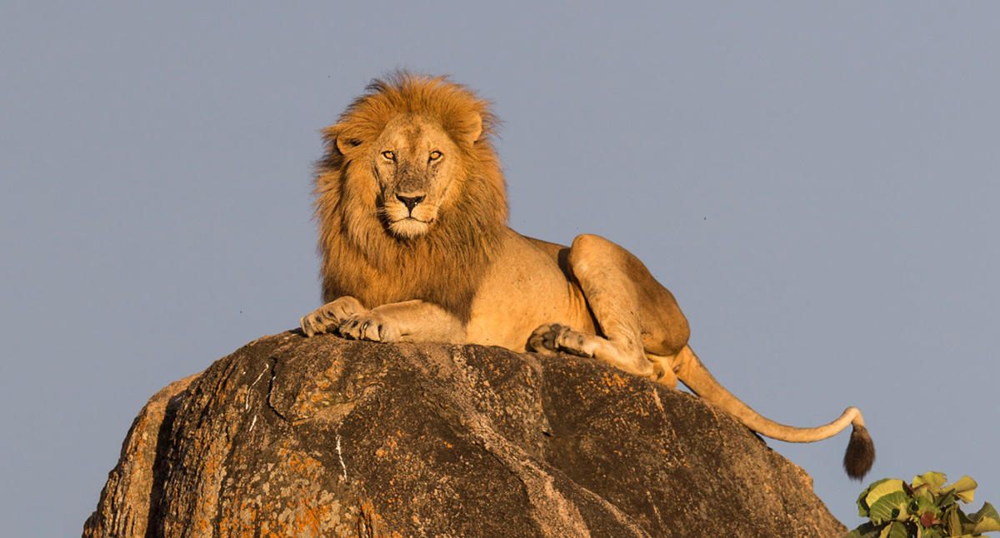

Araña
La araña es un artrópodo que teje telas para atrapar a sus presas.

Fuente: wikipedia_Araña
Ballena
La ballena es un mamífero marino de gran tamaño que se alimenta de plancton.

Fuente: wikipedia_Ballena
cangrejo
El cangrejo es un crustáceo que habita en los océanos y se caracteriza por su caparazón duro y pinzas.

Fuente: wikipedia_Cangrejo
Delfín
El delfín es un mamífero marino inteligente y ágil que vive en grupos sociales.
Fuente: wikipedia_Delfin
Elefante
El elefante es el mamífero terrestre más grande y se caracteriza por su trompa larga y colmillos.
Fuente: wikipedia_Elefante
Flamenco
El flamenco es un ave zancuda conocida por su plumaje rosa y su cuello largo.
Fuente: wikipedia_Flamenco
Gorila
El gorila es un primate herbívoro que habita en las selvas africanas y es conocido por su fuerza.
Fuente: wikipedia_Gorila
Halcón
El halcón es un ave rapaz conocida por su aguda visión y vuelo veloz.
Fuente: wikipedia_Halcon
Iguana
La iguana es un reptil herbívoro que habita en regiones tropicales y se caracteriza por su piel escamosa.
Fuente: wikipedia_Iguana
Jirafa
La jirafa es un mamífero herbívoro con un largo cuello que le permite alcanzar hojas en lo alto de los árboles.
Fuente: wikipedia_Jirafa
Koala
El koala es un marsupial arbóreo que se encuentra en Australia y se alimenta principalmente de hojas de eucalipto.
Fuente: wikipedia_Koala
Leon
El león es un felino carnívoro que vive en manadas y es conocido como el "rey de la selva".
Fuente: wikipedia_Leon